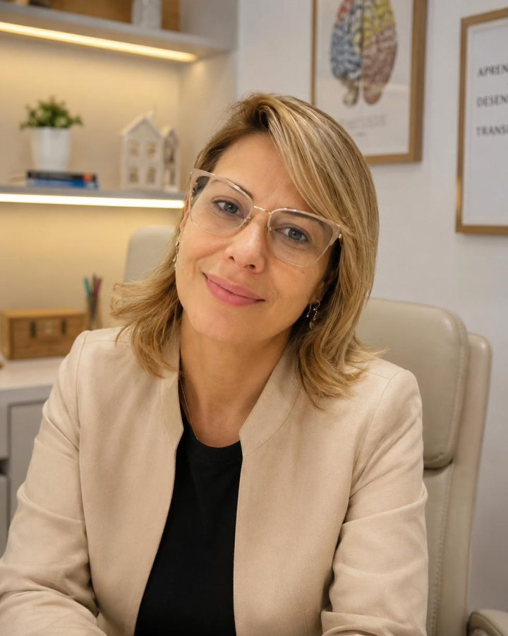

Toda semana, sua família recebe um plano de atividades pensado para a criança, preparado e revisado por uma neuropsicopedagoga. Você conduz em casa, com passo a passo e orientação profissional.
Para crianças e adolescentes de 2 a 14 anos. Sem fidelidade: cancele quando quiser.

Muitas famílias chegam até aqui depois de tentar de tudo. Estes são sinais de atenção, não diagnósticos.
O que deveria levar 20 minutos vira uma hora de discussão, e todo mundo termina o dia exausto.
Instruções simples precisam ser repetidas várias vezes, e a atenção se perde no meio do caminho.
A leitura, a escrita ou a matemática avançam mais devagar do que você esperava para a idade.
Diz que não sabe, desiste rápido e a confiança vai diminuindo.
E com os pequenos (2 a 5 anos)? A fala que demora a aparecer, a dificuldade com lápis, tesoura e encaixes, ou com rotinas e frustrações também podem ser estimuladas com atividades certas, em casa.
Quando a dificuldade aparece, é comum pensar que falta esforço. Muitas vezes é uma habilidade que ainda precisa de estímulo na medida certa, no ritmo da criança.
Se algo preocupa você, a Mentoria também ajuda a perceber quando é hora de buscar avaliação com outros profissionais. Ela não substitui avaliação e nem diagnóstico.
A Mentoria Aprender une orientação profissional e atividades personalizadas para que você estimule, em casa, as habilidades que a criança precisa para aprender: atenção, memória, leitura, escrita, linguagem e organização.
Uma conversa online para conhecer a criança, a rotina e as queixas da família. O plano nasce dessa escuta.
Jogos e desafios curtos, escolhidos para as habilidades do seu filho, sem material complicado.
Um novo plano a cada semana, com passo a passo. Você escolhe o formato que cabe na rotina.
Um exemplo ilustrativo para você imaginar o dia a dia. Os planos reais são montados para cada criança.
O ponto de partida vem da triagem, da conversa de acolhimento e do que você conta ao longo das semanas.
Exemplos de como uma atividade pode variar. Não representam um plano real.
Criei a Mentoria para levar o olhar da psicopedagogia para dentro de casa: com método, afeto e orientação para a família. Cada plano é preparado e revisado por mim, para que a criança aprenda no seu ritmo e a rotina de estudos fique mais tranquila.
Formação em pedagogia, psicopedagogia, neuropsicopedagogia e neuropsicologia (em curso).
Simples para a família, cuidadoso para a criança.
Cria a conta, cadastra seu filho e responde a uma triagem sobre as dificuldades e a rotina.
Um encontro online de 30 minutos, em horário que você escolhe. É opcional: se preferir, o plano sai com as respostas da triagem.
Atividades preparadas e revisadas por neuropsicopedagoga, com objetivo e passo a passo.
Escolha o formato que cabe na rotina, com opções de 1, 2 ou 4 atividades por dia, conforme a idade.
Semana após semana, chegam novos planos e você segue com orientação ao longo do mês.
O plano parte da história da criança, e não de uma lista pronta para todos.
Cada plano passa pelo olhar da neuropsicopedagoga antes de chegar até você.
Atividades curtas, conforme a idade.
Você conduz e acompanha de perto, fortalecendo o vínculo no processo de aprender.
Tudo o que sua família precisa em um único acompanhamento mensal.
Pagamento online seguro. Sem fidelidade.
Não. Cada plano traz o passo a passo, e a família conduz com a orientação da Mentoria.
Pode, como complemento. A Mentoria não substitui o acompanhamento que já existe. Vale conversar com os outros profissionais sobre as atividades.
Não. É um suporte psicopedagógico orientado e não faz diagnóstico. Quando for preciso, a família é orientada a buscar avaliação profissional.
Você escolhe o formato da semana: 1, 2 ou 4 atividades por dia, conforme a idade e a rotina da família. As atividades são curtas.
Cada criança tem o seu ritmo, e não é possível prometer prazos ou resultados. O que a Mentoria oferece é constância: atividades bem escolhidas, toda semana, com orientação.
As atividades são curtas e lúdicas. Se houver muita resistência, conte no acompanhamento: cada semana traz um novo plano, e o caminho vai sendo ajustado.
As atividades usam, sempre que possível, objetos da casa. Alguns planos podem sugerir jogos ou materiais para apoiar o trabalho.
O pagamento é online e mensal. Você pode cancelar quando quiser, e o acesso continua até o fim do período já pago.
Vocês usam a mesma conta, com um acompanhamento para cada filho e o mesmo valor mensal.
As informações que você compartilha são usadas para montar os planos e acompanhar a Mentoria. Você pode pedir a exclusão do cadastro falando com a Michelle.
Comece a Mentoria e receba um plano pensado para o seu filho, com orientação de quem entende de aprendizagem.
Começar a MentoriaPrefere conversar antes? Fale com a Michelle pelo WhatsApp